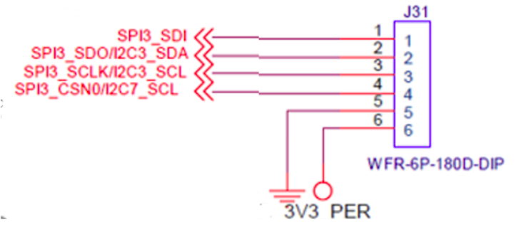
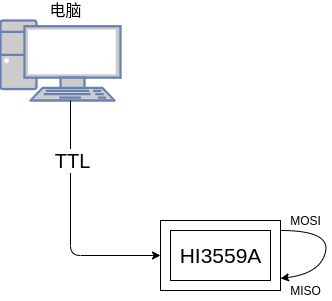

shuixia07-liteos-spi_user
[TOC]
一、概述
SPI 控制器实现数据的串并、并串转换，可以作为 Master 与外部设备进行同步串行通信。支持 MOTOROLA 的 SPI、TI 串行同步、MicroWire 三种外设接口协议。
芯片总共有 12 组 SPI 接口，其中主 SOC 侧有 7 组 SPI0~6，Sensor Hub 子系统有 5组，Sensor Hub SPI0~4。
-
其中 SOC 侧的 SPI0~3 支持 2 片选，SPI4 支持 4 片选，SPI5（master）/SPI6（slave）为 SOC 与 SensorHub 内部通讯专用。
-
Sensor Hub SPI0/1 支持 3 片选，Sensor Hub SPI2 支持单片选，Sensor Hub SPI3（master）/ Sensor Hub SPI4（slave）为 SOC 与 Sensor Hub 内部通讯专用。
-
SOC 侧的 SPI0~4 只支持 Master 接口，工作参考时钟为 APB 总线时钟，SPI 输出的SPI_CLK 最大支持 24.75MHz。
-
Sensor Hub SPI0~3 只支持 Master 接口，工作时钟可以为时钟源的 2 分频、4 分频、8 分频，SPI 输出的 SPI_CLK 最大支持 48MHz。
SPI 的功能特点有：
-
接口时钟频率可编程。
-
收/发分开的宽度 16bit、深度为 256 的 FIFO。
-
串行数据帧长度可编程：4bit～16bit。
-
内部提供环回测试模式。
-
支持 DMA 操作。
-
支持 SPI、MicroWire、TI 同步串行三种接口，支持单帧和连续帧格式。
-
支持 SPI 全双工工作模式，时钟极性、相位可配置。
-
支持 MicroWire 半双工工作模式。
-
支持 TI 同步串行接口全双工工作模式。
二、 参考文件
GPIO复用功能描述文件《Hi3559A V100_PINOUT_EN.xlsx》
驱动操作使用指南《外围设备驱动 操作指南.pdf》
寄存器相关操作《Hi3559A╱C V100 ultra-HD Mobile Camera SoC 用户指南.pdf》
三、驱动编译
1.官方驱动
官方提供了SPI驱动，其源码路径为 drivers/spi，要在编译脚本里指定 SPI 源码路径与头文件路径，编译成功后，out 目录下会生成名为 libspi.a 的库文件，链接时需要通过-lspi 参数指定该库文件。
文件列表
| 文件名称 | 描述 | 备注 |
|---|---|---|
| drivers/spi/***.c | 接口源文件 | |
| drivers/spi/libuart.a | 静态库文件 | |
| 等等 |
使用步骤
-
步骤 1. 驱动初始化，调用如下接口：
spi_dev_init();
-
步骤 2. 开发者需要根据设备硬件特性配置相关的管脚复用。
具体请参考《Hi3559AV100_PINOUT_CN》中管脚控制寄存器页签。
-
步骤 3. 用户可根据需要调用模块的读写函数对设备进行访问。
2.用户驱动
官方的驱动很大一部分需要用户了解一些底层知识，因此在官方驱动的基础上封装了一层用户驱动。
用户驱动的使用如下：
-
调用SPI初始化函数
hal_spi_initial()
-
创建接受线程，等待接收数据被唤醒
hal_spi_read()
-
发送数据
hal_spi_write()
-
数据收发
hal_spi_convert()
四、API说明
1.官方驱动
官方提供的驱动如下所示：提供了open()函数、ioctl()函数，因此仅需要考克open()、ioctl()函数(如需要使用额外的功能，还需要用户自行操作底层API)。
struct file_operations_vfs spidev_ops =
{
spidev_open,
NULL,
NULL,
NULL,
NULL,
spidev_ioctl,
#ifndef CONFIG_DISABLE_POLL
NULL,
#endif
NULL
};
open()
/******************************************************************************
函数功能：posix标准函数，用于打开一个设备
输入参数：
__path：设备、端口设备为："/dev/spidev0.0" "/dev/spidev0.1"等
__oflag：打开方式：O_RDWR：可读可写
输出参数：
文件句柄，负数：错误 非负数：打开成功
******************************************************************************/
open (const char *__path, int __oflag, ...)
ioctl()
/******************************************************************************
函数功能：posix标准函数，用来设置一个设备
输入参数：
__fd：open()返回的文件句柄
cmd：设置的参数类型
arg：设置的参数
输出参数：
读取数据时，返回的数据
******************************************************************************/
int (*ioctl)(FAR struct file *filep, int cmd, unsigned long arg);
可设置的参数如下：
| 命令 | 命令码 | 参数 | 返回值 | 说明 |
|---|---|---|---|---|
| SPI_IOC_RD_MODE | 0x0801 | 模式 | 获取当前设置的模式 | |
| SPI_IOC_RD_LSB_FIRST | 0x0802 | LSB? | 读取是否为LSB(驱动不支持) | |
| SPI_IOC_RD_BITS_PER_WORD | 0x0803 | 位数 | 获取每次传输的比特数 | |
| SPI_IOC_RD_MAX_SPEED_HZ | 0x0804 | 获取最大的spi速度 | ||
| SPI_IOC_WR_MODE | 0x0805 | 模式 | 设置模式 | |
| SPI_IOC_WR_LSB_FIRST | 0x0806 | LSB | 设置为LSB传输(驱动不支持) | |
| SPI_IOC_WR_BITS_PER_WORD | 0x0807 | 位数 | 设置传输的位数4~32 | |
| SPI_IOC_WR_MAX_SPEED_HZ | 0x0808 | 速度 | 设置SPI传输速度 | |
| SPI_IOC_MESSAGE(N) | 0x0809 | 传输一个数据包 |
2.用户驱动
*int hal_spi_initial(const char path, uint8_t bits, uint8_t spi_mode, uint8_t cs, uint8_t lsb)
/****************************************************
* 函数功能：SPI接口初始化
* 输入参数：
* path：spi设备，端口设备为："/dev/spidev0.0" "/dev/spidev0.1"等
* bits：数据位数 4~32
* spi_mode：SPI模式，极性和数据边沿
* cs： cs的有效电平 0、1
* lsb： isb传输
* 输出参数：
* 文件句柄
* *************************************************/
int hal_spi_initial(const char *path, uint8_t bits, uint8_t spi_mode, uint8_t cs, uint8_t lsb);
int hal_spi_read(int fd,uint8_t rx_buff, uint8_t len)*
/****************************************************
* 函数功能：SPI读取数据
* 输入参数：
* fd：文件句柄
* rx_buff：接收数据的指针
* len：接收数据的长度
* 输出参数：
* 1：传输成功 0：传输错误
* *************************************************/
int hal_spi_read(int fd,uint8_t* rx_buff, uint8_t len);
int hal_spi_write(int fd,uint8_t tx_buff, uint8_t len);*
/****************************************************
* 函数功能：SPI发送数据
* 输入参数：
* fd：文件句柄
* tx_buff：发送数据的指针
* len：发送数据的长度
* 输出参数：
* 1：传输成功 0：传输错误
* *************************************************/
int hal_spi_write(int fd,uint8_t* tx_buff, uint8_t len);
**int hal_spi_convert(int fd, uint8_t tx_buff, uint8_t rx_buff,uint8_t len)
/****************************************************
* 函数功能：SPI交换数据
* 输入参数：
* fd：文件句柄
* tx_buff：发送数据的指针
* rx_buff：接收数据的指针
* len：发送数据的长度
* 输出参数：
* 1：传输成功 0：传输错误
* *************************************************/
int hal_spi_convert(int fd, uint8_t *tx_buff, uint8_t *rx_buff,uint8_t len);
void hal_spi_close(int fd)
/****************************************************
* 函数功能：关闭SPI端口
* 输入参数：
* fd：文件句柄
* 输出参数：
* void
* *************************************************/
void hal_spi_close(int fd);
五、使用说明

如图所示：我目前使用的板卡对外提供了一组SPI接口，其中CSN0表示接口为SPI3.0。查找《Hi3559A V100_PINOUT_EN》，找到IO口复用的地址寄存器为reg41~reg44。在hal_gpioaf.h中添加如下代码:
hal_gpioaf.h
#define AF_SPI3_VUE 0x01
#define AF_SPI3_SCLK IOREG(41)
#define AF_SPI3_MOSI IOREG(42)
#define AF_SPI3_MISO IOREG(43)
#define AF_SPI3_CSN0 IOREG(44)
#define AF_SPI3_CSN1 IOREG(45)
#define AF_SPI3_0_Config() { \
writeor(AF_SPI3_SCLK, AF_SPI3_VUE); \
writeor(AF_SPI3_MOSI, AF_SPI3_VUE); \
writeor(AF_SPI3_MISO, AF_SPI3_VUE); \
writeor(AF_SPI3_CSN0, AF_SPI3_VUE); \
}
新建user_spi.c、user_spi.h。
user_spi.h
#ifndef __USER_SPI_H__
#define __USER_SPI_H__
#include "user.h"
void user_spi_initial(void);
#endif
user_spi.c
#include "user_spi.h"
uint8_t tx_buff[256] = {1,2,3,4,5,6,7,8};
uint8_t rx_buff[256];
int spi_fd;
#define SPI_PORT "/dev/spidev3.0"
pthread_mutex_t mutex_spi;
static void *spi_readmsg(void *arg){
int fd, i;
pthread_mutex_init(&mutex_spi, NULL); //todo
fd = hal_spi_initial(SPI_PORT, 8, SPI_MODE_0, 0 , 0);
hal_spi_convert(fd, tx_buff, rx_buff,8);
dprintf("recv:");
for(i = 0;i < 8;i ++){
dprintf("%x,",rx_buff[i]);
}
}
void user_spi_initial(void){
pthread_t id;
int ret;
pthread_attr_t use_attr;
use_attr.inheritsched = PTHREAD_EXPLICIT_SCHED;
use_attr.detachstate = PTHREAD_CREATE_DETACHED;
ret = pthread_create(&id, &use_attr, spi_readmsg, NULL);
if (ret) {
dprintf("spi read thread create failed!\n");
}
}

将相关代码拷贝到SDK目录下，其具体路径为：osdrv/platform/liteos_a53/liteos/sample/sample_osdrv，对程序进行编译，make之后便可以得到可执行文件，将该文件烧写到板卡上便可以执行，其测试步骤如上图所示：使用电脑作为串口监视助手，能够打印系统系统，短接SPI3的MISO和MOSI，运行上述程序，串口打印成功接收数据。
六、注意事项
- 使用设备之前必须先配置IO复用
- SPI的设备含有多个CSN的，必须选择合适的设备，例如spidev3.0、spidev3.1。